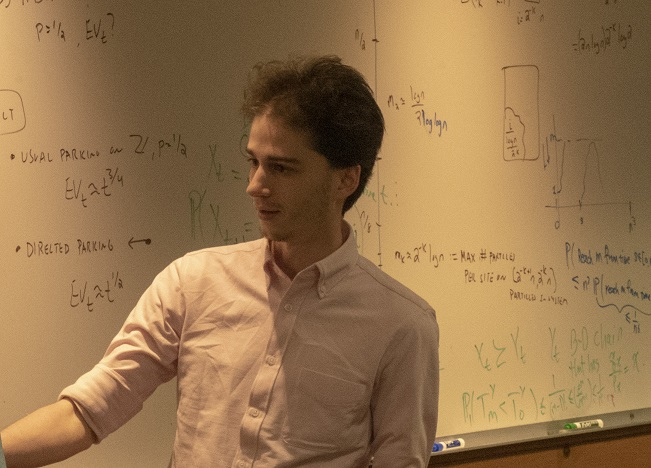

Jacob Richey
Postdoctoral research fellow at the Renyi Institute

Email:
jrichey(at)renyi.hu
CV
Research
My research is in combinatorial probability. Recently, I have been thinking about two interacting particle systems, the stochastic sandpile and the parking process, and combinatorics for shifts of finite type.
Publications and preprints
When random intersection graphs lose geometry. With Sebastien Bubeck and Miklos Racz. (In preparation)
Random walks on regular trees cannot be slowed down, with Omer Angel, Jacob Richey, Amir Yehudayoff, Yinon Spinka.
Diffusion-limited annihilating-coalescing systems, with Sungwon Ahn, Matt Junge, Hanbaek Lyu, Lily Reeves, Jacob Richey, David Sivakoff.
Active phase for the Stochastic Sandpile on Z.
Active phase for activated random walk on Z. CMP, 2020.
Intersections of random sets. Journal of Applied Probability, 2020.
Rumor source detection with multiple observations under adaptive diffusion protocols. IEEE, 2020.
Activated random walk on a cycle. AIHP, 2019.
A smooth transition from Wishart to GOE. JOTP, 2018.
Selected talks
Finding the source of a random diffusion
Recent results on the phase transition for ARW on Z
Random random
Combinatorial processes
Entropy and letter densities for pattern avoiding processes
Collisions among random walks
Sumsets in [0,1]
Undergraduate honors thesis
Bridge articles
Bridge conventions and bidding. An introduction to the basics of bridge I wrote to teach friends and family about the game. Contains an explicit bidding tree for SAYC.
Bridge articles. Some short, fun articles I wrote to teach advanced bridge situations, e.g. squeezes and coups.